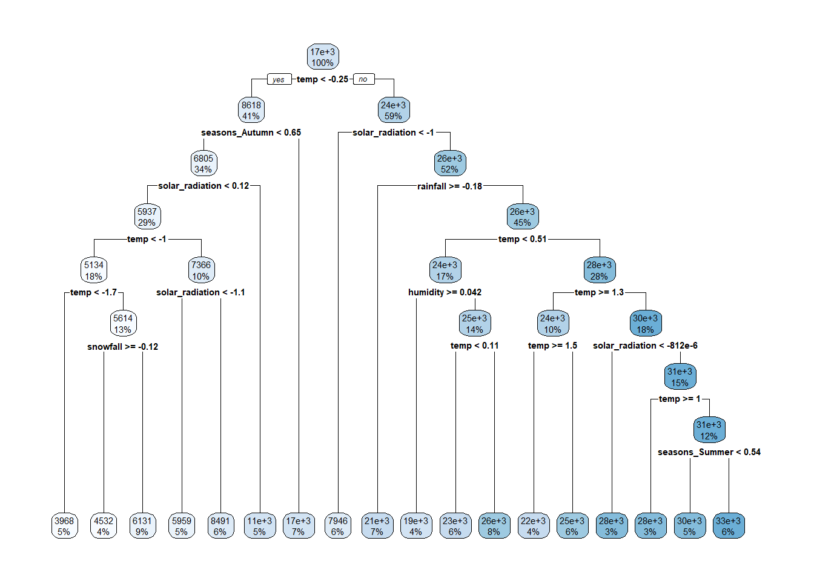
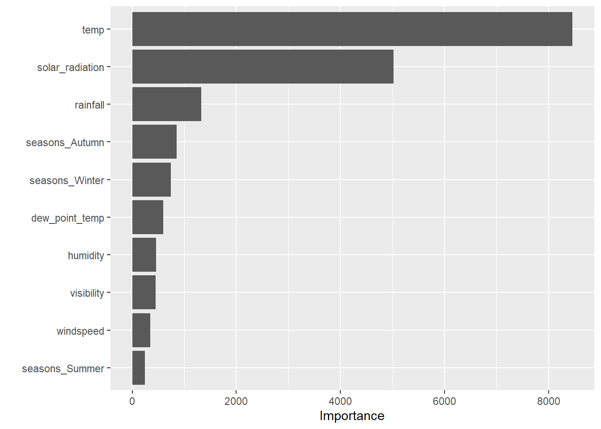
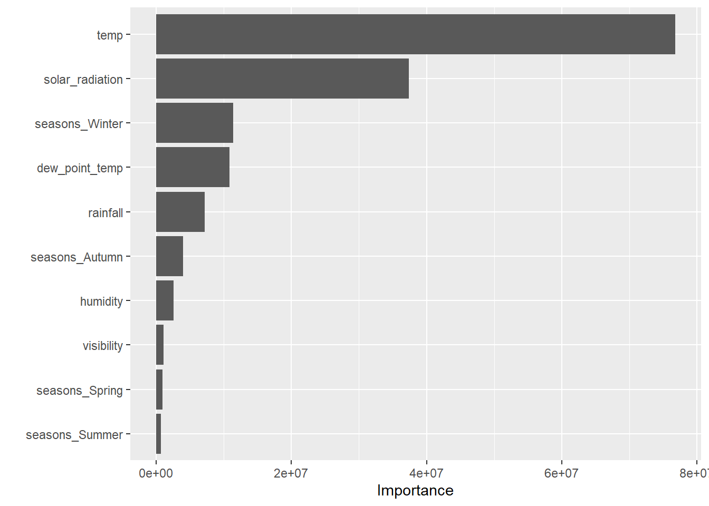

set.seed(2025)
# Core
library(tidyverse)
library(lubridate)
library(janitor)
library(skimr)
# Viz
library(GGally)
# Modeling
library(tidymodels)Homework 9 - Seoul Bike Rentals — Additional MLR Models
1) Read the data (with encoding fix) and clean names
url <- "https://www4.stat.ncsu.edu/~online/datasets/SeoulBikeData.csv"
raw_hourly <- readr::read_csv(
url,
locale = readr::locale(encoding = "Latin1") # fixes 'invalid multibyte string'
) %>%
janitor::clean_names()Rows: 8760 Columns: 14
── Column specification ────────────────────────────────────────────────────────
Delimiter: ","
chr (4): Date, Seasons, Holiday, Functioning Day
dbl (10): Rented Bike Count, Hour, Temperature(°C), Humidity(%), Wind speed ...
ℹ Use `spec()` to retrieve the full column specification for this data.
ℹ Specify the column types or set `show_col_types = FALSE` to quiet this message.glimpse(raw_hourly)Rows: 8,760
Columns: 14
$ date <chr> "01/12/2017", "01/12/2017", "01/12/2017", "01/…
$ rented_bike_count <dbl> 254, 204, 173, 107, 78, 100, 181, 460, 930, 49…
$ hour <dbl> 0, 1, 2, 3, 4, 5, 6, 7, 8, 9, 10, 11, 12, 13, …
$ temperature_c <dbl> -5.2, -5.5, -6.0, -6.2, -6.0, -6.4, -6.6, -7.4…
$ humidity_percent <dbl> 37, 38, 39, 40, 36, 37, 35, 38, 37, 27, 24, 21…
$ wind_speed_m_s <dbl> 2.2, 0.8, 1.0, 0.9, 2.3, 1.5, 1.3, 0.9, 1.1, 0…
$ visibility_10m <dbl> 2000, 2000, 2000, 2000, 2000, 2000, 2000, 2000…
$ dew_point_temperature_c <dbl> -17.6, -17.6, -17.7, -17.6, -18.6, -18.7, -19.…
$ solar_radiation_mj_m2 <dbl> 0.00, 0.00, 0.00, 0.00, 0.00, 0.00, 0.00, 0.00…
$ rainfall_mm <dbl> 0, 0, 0, 0, 0, 0, 0, 0, 0, 0, 0, 0, 0, 0, 0, 0…
$ snowfall_cm <dbl> 0, 0, 0, 0, 0, 0, 0, 0, 0, 0, 0, 0, 0, 0, 0, 0…
$ seasons <chr> "Winter", "Winter", "Winter", "Winter", "Winte…
$ holiday <chr> "No Holiday", "No Holiday", "No Holiday", "No …
$ functioning_day <chr> "Yes", "Yes", "Yes", "Yes", "Yes", "Yes", "Yes…2) EDA — types, missingness, factors, rename, subset
# Convert date, set factors, and rename to friendly snake_case
hourly <- raw_hourly %>%
mutate(
date = lubridate::dmy(date), # CSV uses day/month/year
seasons = factor(seasons, levels = c("Winter","Spring","Summer","Autumn")),
holiday = factor(holiday),
functioning_day = factor(functioning_day)
) %>%
rename(
bike_count = rented_bike_count,
temp = temperature_c,
humidity = humidity_percent,
windspeed = wind_speed_m_s,
visibility = visibility_10m,
dew_point_temp = dew_point_temperature_c,
solar_radiation = solar_radiation_mj_m2,
rainfall = rainfall_mm,
snowfall = snowfall_cm
)
# Missingness check
missing_tbl <- hourly %>%
summarise(across(everything(), ~sum(is.na(.)))) %>%
pivot_longer(everything(), names_to = "variable", values_to = "n_missing") %>%
arrange(desc(n_missing))
missing_tbl# A tibble: 14 × 2
variable n_missing
<chr> <int>
1 date 0
2 bike_count 0
3 hour 0
4 temp 0
5 humidity 0
6 windspeed 0
7 visibility 0
8 dew_point_temp 0
9 solar_radiation 0
10 rainfall 0
11 snowfall 0
12 seasons 0
13 holiday 0
14 functioning_day 0# Quick structure / summary
skim(hourly)| Name | hourly |
| Number of rows | 8760 |
| Number of columns | 14 |
| _______________________ | |
| Column type frequency: | |
| Date | 1 |
| factor | 3 |
| numeric | 10 |
| ________________________ | |
| Group variables | None |
Variable type: Date
| skim_variable | n_missing | complete_rate | min | max | median | n_unique |
|---|---|---|---|---|---|---|
| date | 0 | 1 | 2017-12-01 | 2018-11-30 | 2018-06-01 | 365 |
Variable type: factor
| skim_variable | n_missing | complete_rate | ordered | n_unique | top_counts |
|---|---|---|---|---|---|
| seasons | 0 | 1 | FALSE | 4 | Spr: 2208, Sum: 2208, Aut: 2184, Win: 2160 |
| holiday | 0 | 1 | FALSE | 2 | No : 8328, Hol: 432 |
| functioning_day | 0 | 1 | FALSE | 2 | Yes: 8465, No: 295 |
Variable type: numeric
| skim_variable | n_missing | complete_rate | mean | sd | p0 | p25 | p50 | p75 | p100 | hist |
|---|---|---|---|---|---|---|---|---|---|---|
| bike_count | 0 | 1 | 704.60 | 645.00 | 0.0 | 191.00 | 504.50 | 1065.25 | 3556.00 | ▇▃▂▁▁ |
| hour | 0 | 1 | 11.50 | 6.92 | 0.0 | 5.75 | 11.50 | 17.25 | 23.00 | ▇▇▆▇▇ |
| temp | 0 | 1 | 12.88 | 11.94 | -17.8 | 3.50 | 13.70 | 22.50 | 39.40 | ▂▆▆▇▂ |
| humidity | 0 | 1 | 58.23 | 20.36 | 0.0 | 42.00 | 57.00 | 74.00 | 98.00 | ▁▅▇▇▅ |
| windspeed | 0 | 1 | 1.72 | 1.04 | 0.0 | 0.90 | 1.50 | 2.30 | 7.40 | ▇▇▂▁▁ |
| visibility | 0 | 1 | 1436.83 | 608.30 | 27.0 | 940.00 | 1698.00 | 2000.00 | 2000.00 | ▂▂▂▂▇ |
| dew_point_temp | 0 | 1 | 4.07 | 13.06 | -30.6 | -4.70 | 5.10 | 14.80 | 27.20 | ▂▃▇▇▆ |
| solar_radiation | 0 | 1 | 0.57 | 0.87 | 0.0 | 0.00 | 0.01 | 0.93 | 3.52 | ▇▁▁▁▁ |
| rainfall | 0 | 1 | 0.15 | 1.13 | 0.0 | 0.00 | 0.00 | 0.00 | 35.00 | ▇▁▁▁▁ |
| snowfall | 0 | 1 | 0.08 | 0.44 | 0.0 | 0.00 | 0.00 | 0.00 | 8.80 | ▇▁▁▁▁ |
# Subset to functioning days only (per instructions)
hourly_fun <- filter(hourly, functioning_day == "Yes")3) Summarize to daily granularity
daily <- hourly_fun %>%
group_by(date, seasons, holiday) %>%
summarise(
bike_count = sum(bike_count, na.rm = TRUE),
rainfall = sum(rainfall, na.rm = TRUE),
snowfall = sum(snowfall, na.rm = TRUE),
temp = mean(temp, na.rm = TRUE),
humidity = mean(humidity, na.rm = TRUE),
windspeed = mean(windspeed, na.rm = TRUE),
visibility = mean(visibility, na.rm = TRUE),
dew_point_temp = mean(dew_point_temp, na.rm = TRUE),
solar_radiation = mean(solar_radiation, na.rm = TRUE),
.groups = "drop"
)
skim(daily)| Name | daily |
| Number of rows | 353 |
| Number of columns | 12 |
| _______________________ | |
| Column type frequency: | |
| Date | 1 |
| factor | 2 |
| numeric | 9 |
| ________________________ | |
| Group variables | None |
Variable type: Date
| skim_variable | n_missing | complete_rate | min | max | median | n_unique |
|---|---|---|---|---|---|---|
| date | 0 | 1 | 2017-12-01 | 2018-11-30 | 2018-05-28 | 353 |
Variable type: factor
| skim_variable | n_missing | complete_rate | ordered | n_unique | top_counts |
|---|---|---|---|---|---|
| seasons | 0 | 1 | FALSE | 4 | Sum: 92, Win: 90, Spr: 90, Aut: 81 |
| holiday | 0 | 1 | FALSE | 2 | No : 336, Hol: 17 |
Variable type: numeric
| skim_variable | n_missing | complete_rate | mean | sd | p0 | p25 | p50 | p75 | p100 | hist |
|---|---|---|---|---|---|---|---|---|---|---|
| bike_count | 0 | 1 | 17485.31 | 9937.16 | 977.00 | 6967.00 | 18563.00 | 26285.00 | 36149.00 | ▇▃▅▇▃ |
| rainfall | 0 | 1 | 3.58 | 11.79 | 0.00 | 0.00 | 0.00 | 0.50 | 95.50 | ▇▁▁▁▁ |
| snowfall | 0 | 1 | 1.86 | 8.80 | 0.00 | 0.00 | 0.00 | 0.00 | 78.70 | ▇▁▁▁▁ |
| temp | 0 | 1 | 12.78 | 11.72 | -14.74 | 3.30 | 13.74 | 22.59 | 33.74 | ▂▆▆▇▅ |
| humidity | 0 | 1 | 58.17 | 14.87 | 22.25 | 47.58 | 57.17 | 67.71 | 95.88 | ▂▆▇▃▂ |
| windspeed | 0 | 1 | 1.73 | 0.60 | 0.66 | 1.30 | 1.66 | 1.95 | 4.00 | ▅▇▂▁▁ |
| visibility | 0 | 1 | 1434.01 | 491.16 | 214.29 | 1087.04 | 1557.75 | 1874.29 | 2000.00 | ▂▂▃▅▇ |
| dew_point_temp | 0 | 1 | 3.95 | 12.99 | -27.75 | -5.19 | 4.61 | 14.92 | 25.04 | ▂▅▇▇▇ |
| solar_radiation | 0 | 1 | 0.57 | 0.32 | 0.03 | 0.28 | 0.56 | 0.82 | 1.22 | ▇▇▇▇▅ |
Plots and correlations
# Distribution of daily rentals
ggplot(daily, aes(bike_count)) +
geom_histogram(bins = 30) +
labs(title = "Daily Bike Rentals", x = "Count (daily total)")
# Rentals by season
ggplot(daily, aes(seasons, bike_count, fill = seasons)) +
geom_boxplot(show.legend = FALSE) +
labs(title = "Bike rentals by season")
# Weather relationships
ggplot(daily, aes(temp, bike_count)) +
geom_point(alpha = 0.6) +
geom_smooth(method = "lm", se = FALSE) +
labs(title = "Temperature vs rentals")`geom_smooth()` using formula = 'y ~ x'
ggplot(daily, aes(humidity, bike_count)) +
geom_point(alpha = 0.6) +
geom_smooth(method = "lm", se = FALSE) +
labs(title = "Humidity vs rentals")`geom_smooth()` using formula = 'y ~ x'
num_tbl <- daily %>% select(where(is.numeric))
round(cor(num_tbl, use = "pairwise.complete.obs"), 3) bike_count rainfall snowfall temp humidity windspeed
bike_count 1.000 -0.239 -0.265 0.753 0.036 -0.193
rainfall -0.239 1.000 -0.023 0.145 0.529 -0.102
snowfall -0.265 -0.023 1.000 -0.267 0.065 0.021
temp 0.753 0.145 -0.267 1.000 0.404 -0.261
humidity 0.036 0.529 0.065 0.404 1.000 -0.234
windspeed -0.193 -0.102 0.021 -0.261 -0.234 1.000
visibility 0.166 -0.222 -0.102 0.002 -0.559 0.206
dew_point_temp 0.650 0.265 -0.210 0.963 0.632 -0.288
solar_radiation 0.736 -0.323 -0.233 0.550 -0.274 0.096
visibility dew_point_temp solar_radiation
bike_count 0.166 0.650 0.736
rainfall -0.222 0.265 -0.323
snowfall -0.102 -0.210 -0.233
temp 0.002 0.963 0.550
humidity -0.559 0.632 -0.274
windspeed 0.206 -0.288 0.096
visibility 1.000 -0.154 0.271
dew_point_temp -0.154 1.000 0.383
solar_radiation 0.271 0.383 1.0004) Split data (75/25, stratified by season)
set.seed(2025)
split_obj <- rsample::initial_split(daily, prop = 0.75, strata = seasons)
train <- rsample::training(split_obj)
test <- rsample::testing(split_obj)
set.seed(2025)
cv10 <- rsample::vfold_cv(train, v = 10, strata = seasons)5) Recipes
Recipe 1: - drop date from predictors (keep as ID) - derive weekday/weekend factor from date - dummy encode categoricals - standardize numerics
Recipe 2: Recipe 1 + interactions: seasons×holiday, seasons×temp, temp×rainfall
Recipe 3: Recipe 2 + quadratic terms for the continuous numeric predictors
base_recipe <- function(dat) {
recipe(bike_count ~ ., data = dat) %>%
update_role(date, new_role = "ID") %>%
# Create day-of-week and then a factor as required
step_date(date, features = "dow", label = TRUE) %>%
step_mutate(
day_type = factor(
if_else(as.character(date_dow) %in% c("Saturday","Sunday"),
"weekend", "weekday")
)
) %>%
# Turn the factor into a robust numeric binary and drop the factor & helper
step_mutate(is_weekend = if_else(day_type == "weekend", 1, 0)) %>%
step_rm(day_type, date_dow) %>%
# Dummies for other categoricals only
step_dummy(all_nominal_predictors(), one_hot = TRUE) %>%
step_zv(all_predictors()) %>%
# Normalize numerics (or use center+scale if your recipes version needs it)
step_normalize(all_numeric_predictors())
# step_center(all_numeric_predictors()) %>% step_scale(all_numeric_predictors())
}
rec1 <- base_recipe(train)
rec2 <- base_recipe(train) %>%
step_interact(terms = ~ starts_with("seasons_"):starts_with("holiday_") +
starts_with("seasons_"):temp +
temp:rainfall)
# Apply poly ONLY to continuous predictors (keep this poly fix)
rec3 <- base_recipe(train) %>%
step_interact(terms = ~ starts_with("seasons_"):starts_with("holiday_") +
starts_with("seasons_"):temp +
temp:rainfall) %>%
step_poly(temp, humidity, windspeed, visibility, dew_point_temp,
solar_radiation, rainfall, snowfall, degree = 2)6) Linear model + workflows
lm_spec <- linear_reg() %>% set_engine("lm")
wf1 <- workflow() %>% add_model(lm_spec) %>% add_recipe(rec1)
wf2 <- workflow() %>% add_model(lm_spec) %>% add_recipe(rec2)
wf3 <- workflow() %>% add_model(lm_spec) %>% add_recipe(rec3)7) 10-fold CV and model selection (lowest RMSE)
metrics <- yardstick::metric_set(rmse, rsq)
set.seed(2025)
res1 <- fit_resamples(wf1, resamples = cv10, metrics = metrics,
control = control_resamples(save_pred = TRUE))→ A | warning: prediction from rank-deficient fit; consider predict(., rankdeficient="NA")There were issues with some computations A: x1There were issues with some computations A: x3There were issues with some computations A: x5There were issues with some computations A: x7There were issues with some computations A: x8There were issues with some computations A: x10
There were issues with some computations A: x10set.seed(2025)
res2 <- fit_resamples(wf2, resamples = cv10, metrics = metrics,
control = control_resamples(save_pred = TRUE))→ A | warning: prediction from rank-deficient fit; consider predict(., rankdeficient="NA")There were issues with some computations A: x1There were issues with some computations A: x3There were issues with some computations A: x5There were issues with some computations A: x6There were issues with some computations A: x8There were issues with some computations A: x10
There were issues with some computations A: x10set.seed(2025)
res3 <- fit_resamples(wf3, resamples = cv10, metrics = metrics,
control = control_resamples(save_pred = TRUE))→ A | warning: prediction from rank-deficient fit; consider predict(., rankdeficient="NA")There were issues with some computations A: x1There were issues with some computations A: x2There were issues with some computations A: x3There were issues with some computations A: x5There were issues with some computations A: x6There were issues with some computations A: x8There were issues with some computations A: x9There were issues with some computations A: x10cv_summary <- bind_rows(
collect_metrics(res1) %>% mutate(model = "Recipe 1"),
collect_metrics(res2) %>% mutate(model = "Recipe 2"),
collect_metrics(res3) %>% mutate(model = "Recipe 3")
) %>% filter(.metric == "rmse") %>% arrange(mean)
cv_summary# A tibble: 3 × 7
.metric .estimator mean n std_err .config model
<chr> <chr> <dbl> <int> <dbl> <chr> <chr>
1 rmse standard 3003. 10 243. pre0_mod0_post0 Recipe 3
2 rmse standard 3192. 10 239. pre0_mod0_post0 Recipe 2
3 rmse standard 4193. 10 217. pre0_mod0_post0 Recipe 1best_model_name <- cv_summary$model[1]
best_model_name[1] "Recipe 3"8) Final fit on training data and test RMSE
best_wf <- switch(best_model_name,
"Recipe 1" = wf1,
"Recipe 2" = wf2,
"Recipe 3" = wf3)
final_fit <- last_fit(best_wf, split = split_obj, metrics = metrics)→ A | warning: prediction from rank-deficient fit; consider predict(., rankdeficient="NA")There were issues with some computations A: x1
There were issues with some computations A: x1# Test-set RMSE and R^2
collect_metrics(final_fit)# A tibble: 2 × 4
.metric .estimator .estimate .config
<chr> <chr> <dbl> <chr>
1 rmse standard 3611. pre0_mod0_post0
2 rsq standard 0.874 pre0_mod0_post09) Final model coefficients (tidy)
final_model <- extract_fit_parsnip(final_fit$.workflow[[1]])
broom::tidy(final_model, conf.int = TRUE) %>%
arrange(desc(abs(estimate))) %>%
head(30)# A tibble: 30 × 7
term estimate std.error statistic p.value conf.low conf.high
<chr> <dbl> <dbl> <dbl> <dbl> <dbl> <dbl>
1 dew_point_temp_poly… 218202. 81355. 2.68 7.83e- 3 57925. 378480.
2 temp_poly_1 -156036. 69272. -2.25 2.52e- 2 -292509. -19563.
3 humidity_poly_1 -69789. 23982. -2.91 3.96e- 3 -117037. -22541.
4 temp_poly_2 -48427. 18083. -2.68 7.93e- 3 -84053. -12801.
5 solar_radiation_pol… 44897. 5776. 7.77 2.38e-13 33518. 56276.
6 rainfall_poly_1 -30619. 8175. -3.75 2.27e- 4 -46724. -14513.
7 (Intercept) 19203. 1584. 12.1 1.37e-26 16082. 22324.
8 rainfall_poly_2 17061. 3531. 4.83 2.44e- 6 10104. 24017.
9 dew_point_temp_poly… 14243. 12567. 1.13 2.58e- 1 -10516. 39001.
10 seasons_Summer 6198. 970. 6.39 8.96e-10 4286. 8109.
# ℹ 20 more rows10) Additional models: LASSO, Trees, Bagged Trees, Random Forest
# Extra packages for new models & plots
library(glmnet) # LASSO engineWarning: package 'glmnet' was built under R version 4.4.3Loading required package: Matrix
Attaching package: 'Matrix'The following objects are masked from 'package:tidyr':
expand, pack, unpackLoaded glmnet 4.1-10library(baguette) # bagged treesWarning: package 'baguette' was built under R version 4.4.3library(vip) # variable importance plotsWarning: package 'vip' was built under R version 4.4.3
Attaching package: 'vip'The following object is masked from 'package:utils':
vilibrary(rpart.plot) # regression tree plotWarning: package 'rpart.plot' was built under R version 4.4.3Loading required package: rpart
Attaching package: 'rpart'The following object is masked from 'package:dials':
prune10.1 Best MLR model from HW8 (baseline for comparison)
# Metric set for all new comparisons
reg_metrics <- metric_set(rmse, mae)
# best_wf was defined earlier based on CV RMSE across the 3 recipes
mlr_best_fit <- fit(best_wf, data = train)
mlr_test_pred <- predict(mlr_best_fit, new_data = test) %>%
bind_cols(test %>% select(bike_count))Warning in predict.lm(object = object$fit, newdata = new_data, type =
"response", : prediction from rank-deficient fit; consider predict(.,
rankdeficient="NA")mlr_test_metrics <- reg_metrics(
mlr_test_pred,
truth = bike_count,
estimate = .pred
) %>%
mutate(model = paste0("Best MLR (", best_model_name, ")"))
mlr_test_metrics# A tibble: 2 × 4
.metric .estimator .estimate model
<chr> <chr> <dbl> <chr>
1 rmse standard 3611. Best MLR (Recipe 3)
2 mae standard 2783. Best MLR (Recipe 3)mlr_best_coefs <- extract_fit_parsnip(mlr_best_fit) %>%
tidy() %>%
arrange(desc(abs(estimate)))
head(mlr_best_coefs, 20)# A tibble: 20 × 5
term estimate std.error statistic p.value
<chr> <dbl> <dbl> <dbl> <dbl>
1 dew_point_temp_poly_1 218202. 81355. 2.68 7.83e- 3
2 temp_poly_1 -156036. 69272. -2.25 2.52e- 2
3 humidity_poly_1 -69789. 23982. -2.91 3.96e- 3
4 temp_poly_2 -48427. 18083. -2.68 7.93e- 3
5 solar_radiation_poly_1 44897. 5776. 7.77 2.38e-13
6 rainfall_poly_1 -30619. 8175. -3.75 2.27e- 4
7 (Intercept) 19203. 1584. 12.1 1.37e-26
8 rainfall_poly_2 17061. 3531. 4.83 2.44e- 6
9 dew_point_temp_poly_2 14243. 12567. 1.13 2.58e- 1
10 seasons_Summer 6198. 970. 6.39 8.96e-10
11 humidity_poly_2 -5988. 5927. -1.01 3.13e- 1
12 seasons_Summer_x_temp -5908. 1050. -5.62 5.28e- 8
13 windspeed_poly_1 -5708. 3404. -1.68 9.49e- 2
14 visibility_poly_1 5643. 4241. 1.33 1.85e- 1
15 seasons_Winter -5600. 1012. -5.53 8.38e- 8
16 snowfall_poly_2 -3508. 3146. -1.12 2.66e- 1
17 seasons_Winter_x_temp -3385. 1300. -2.60 9.80e- 3
18 solar_radiation_poly_2 -3293. 3497. -0.942 3.47e- 1
19 seasons_Spring_x_temp 1862. 491. 3.79 1.89e- 4
20 visibility_poly_2 -1849. 3043. -0.607 5.44e- 110.2 LASSO (using Recipe 1)
lasso_spec <- linear_reg(
penalty = tune(),
mixture = 1 # 1 = pure LASSO
) %>%
set_engine("glmnet")
lasso_wf <- workflow() %>%
add_model(lasso_spec) %>%
add_recipe(rec1)
# Simple grid of penalty values
lasso_grid <- grid_regular(penalty(), levels = 30)
set.seed(2025)
lasso_tune <- tune_grid(
lasso_wf,
resamples = cv10,
grid = lasso_grid,
metrics = reg_metrics
)
collect_metrics(lasso_tune)# A tibble: 60 × 7
penalty .metric .estimator mean n std_err .config
<dbl> <chr> <chr> <dbl> <int> <dbl> <chr>
1 1 e-10 mae standard 3301. 10 171. pre0_mod01_post0
2 1 e-10 rmse standard 4206. 10 239. pre0_mod01_post0
3 2.21e-10 mae standard 3301. 10 171. pre0_mod02_post0
4 2.21e-10 rmse standard 4206. 10 239. pre0_mod02_post0
5 4.89e-10 mae standard 3301. 10 171. pre0_mod03_post0
6 4.89e-10 rmse standard 4206. 10 239. pre0_mod03_post0
7 1.08e- 9 mae standard 3301. 10 171. pre0_mod04_post0
8 1.08e- 9 rmse standard 4206. 10 239. pre0_mod04_post0
9 2.40e- 9 mae standard 3301. 10 171. pre0_mod05_post0
10 2.40e- 9 rmse standard 4206. 10 239. pre0_mod05_post0
# ℹ 50 more rowslasso_best <- select_best(lasso_tune, metric = "rmse")
lasso_best# A tibble: 1 × 2
penalty .config
<dbl> <chr>
1 0.0000000001 pre0_mod01_post0lasso_final_wf <- finalize_workflow(lasso_wf, lasso_best)
lasso_final_fit <- fit(lasso_final_wf, data = train)
lasso_test_pred <- predict(lasso_final_fit, new_data = test) %>%
bind_cols(test %>% select(bike_count))
lasso_test_metrics <- reg_metrics(
lasso_test_pred,
truth = bike_count,
estimate = .pred
) %>%
mutate(model = "LASSO")
lasso_test_metrics# A tibble: 2 × 4
.metric .estimator .estimate model
<chr> <chr> <dbl> <chr>
1 rmse standard 4276. LASSO
2 mae standard 3450. LASSOlasso_coefs <- extract_fit_parsnip(lasso_final_fit) %>%
tidy() %>%
arrange(desc(abs(estimate)))
head(lasso_coefs, 20)# A tibble: 15 × 3
term estimate penalty
<chr> <dbl> <dbl>
1 (Intercept) 1.74e+ 4 0.0000000001
2 dew_point_temp 4.37e+ 3 0.0000000001
3 solar_radiation 3.96e+ 3 0.0000000001
4 rainfall -2.20e+ 3 0.0000000001
5 seasons_Autumn 2.03e+ 3 0.0000000001
6 seasons_Winter -1.31e+ 3 0.0000000001
7 humidity -1.01e+ 3 0.0000000001
8 seasons_Summer 6.96e+ 2 0.0000000001
9 holiday_Holiday -5.12e+ 2 0.0000000001
10 windspeed -4.85e+ 2 0.0000000001
11 snowfall -3.68e+ 2 0.0000000001
12 seasons_Spring -3.70e+ 0 0.0000000001
13 holiday_No.Holiday 1.40e-10 0.0000000001
14 temp 0 0.0000000001
15 visibility 0 0.000000000110.3 Regression Tree (tuned)
tree_spec <- decision_tree(
cost_complexity = tune(),
tree_depth = tune(),
min_n = tune()
) %>%
set_engine("rpart") %>%
set_mode("regression")
tree_wf <- workflow() %>%
add_model(tree_spec) %>%
add_recipe(rec1)
tree_grid <- grid_regular(
cost_complexity(),
tree_depth(),
min_n(),
levels = c(5, 5, 5)
)
set.seed(2025)
tree_tune <- tune_grid(
tree_wf,
resamples = cv10,
grid = tree_grid,
metrics = reg_metrics
)
collect_metrics(tree_tune)# A tibble: 250 × 9
cost_complexity tree_depth min_n .metric .estimator mean n std_err
<dbl> <int> <int> <chr> <chr> <dbl> <int> <dbl>
1 0.0000000001 1 2 mae standard 5106. 10 258.
2 0.0000000001 1 2 rmse standard 6748. 10 337.
3 0.0000000001 1 11 mae standard 5106. 10 258.
4 0.0000000001 1 11 rmse standard 6748. 10 337.
5 0.0000000001 1 21 mae standard 5106. 10 258.
6 0.0000000001 1 21 rmse standard 6748. 10 337.
7 0.0000000001 1 30 mae standard 5106. 10 258.
8 0.0000000001 1 30 rmse standard 6748. 10 337.
9 0.0000000001 1 40 mae standard 5106. 10 258.
10 0.0000000001 1 40 rmse standard 6748. 10 337.
# ℹ 240 more rows
# ℹ 1 more variable: .config <chr>tree_best <- select_best(tree_tune, metric = "rmse")
tree_best# A tibble: 1 × 4
cost_complexity tree_depth min_n .config
<dbl> <int> <int> <chr>
1 0.000562 11 21 pre0_mod093_post0tree_final_wf <- finalize_workflow(tree_wf, tree_best)
tree_final_fit <- fit(tree_final_wf, data = train)
tree_test_pred <- predict(tree_final_fit, new_data = test) %>%
bind_cols(test %>% select(bike_count))
tree_test_metrics <- reg_metrics(
tree_test_pred,
truth = bike_count,
estimate = .pred
) %>%
mutate(model = "Regression Tree")
tree_test_metrics# A tibble: 2 × 4
.metric .estimator .estimate model
<chr> <chr> <dbl> <chr>
1 rmse standard 4251. Regression Tree
2 mae standard 3130. Regression Treetree_fit_parsnip <- extract_fit_parsnip(tree_final_fit)
rpart.plot::rpart.plot(tree_fit_parsnip$fit)Warning: Cannot retrieve the data used to build the model (so cannot determine roundint and is.binary for the variables).
To silence this warning:
Call rpart.plot with roundint=FALSE,
or rebuild the rpart model with model=TRUE.
10.4 Bagged Trees (tuned)
bagged_spec <- bag_tree(
cost_complexity = tune(),
min_n = tune()
) %>%
set_engine("rpart", times = 50) %>% # 50 bootstrap samples
set_mode("regression")
bagged_wf <- workflow() %>%
add_model(bagged_spec) %>%
add_recipe(rec1)
bagged_grid <- grid_regular(
cost_complexity(),
min_n(),
levels = c(5, 5)
)
set.seed(2025)
bagged_tune <- tune_grid(
bagged_wf,
resamples = cv10,
grid = bagged_grid,
metrics = reg_metrics
)→ A | warning: There was 1 warning in `dplyr::mutate()`.
ℹ In argument: `model = iter(...)`.
Caused by warning:
! package 'future' was built under R version 4.4.3There were issues with some computations A: x1
There were issues with some computations A: x1collect_metrics(bagged_tune)# A tibble: 50 × 8
cost_complexity min_n .metric .estimator mean n std_err .config
<dbl> <int> <chr> <chr> <dbl> <int> <dbl> <chr>
1 0.0000000001 2 mae standard 2330. 10 129. pre0_mod01_post0
2 0.0000000001 2 rmse standard 2907. 10 168. pre0_mod01_post0
3 0.0000000001 11 mae standard 2322. 10 142. pre0_mod02_post0
4 0.0000000001 11 rmse standard 2930. 10 155. pre0_mod02_post0
5 0.0000000001 21 mae standard 2548. 10 128. pre0_mod03_post0
6 0.0000000001 21 rmse standard 3157. 10 140. pre0_mod03_post0
7 0.0000000001 30 mae standard 2723. 10 173. pre0_mod04_post0
8 0.0000000001 30 rmse standard 3370. 10 164. pre0_mod04_post0
9 0.0000000001 40 mae standard 2793. 10 183. pre0_mod05_post0
10 0.0000000001 40 rmse standard 3425. 10 181. pre0_mod05_post0
# ℹ 40 more rowsbagged_best <- select_best(bagged_tune, metric = "rmse")
bagged_best# A tibble: 1 × 3
cost_complexity min_n .config
<dbl> <int> <chr>
1 0.00000316 2 pre0_mod11_post0bagged_final_wf <- finalize_workflow(bagged_wf, bagged_best)
bagged_final_fit <- fit(bagged_final_wf, data = train)
bagged_test_pred <- predict(bagged_final_fit, new_data = test) %>%
bind_cols(test %>% select(bike_count))
bagged_test_metrics <- reg_metrics(
bagged_test_pred,
truth = bike_count,
estimate = .pred
) %>%
mutate(model = "Bagged Trees")
bagged_test_metrics# A tibble: 2 × 4
.metric .estimator .estimate model
<chr> <chr> <dbl> <chr>
1 rmse standard 3185. Bagged Trees
2 mae standard 2469. Bagged Trees# Permutation-based variable importance for bagged trees
# Prep recipe and bake training data
rec1_prep <- prep(rec1, training = train)
baked_train <- bake(rec1_prep, new_data = train)
X <- baked_train %>% dplyr::select(-bike_count)
y <- baked_train$bike_count
# Custom prediction wrapper that handles the parameter name issue
bagged_pred_wrapper <- function(object, newdata) {
# The bagger needs 'new_data' with underscore
pred_result <- predict(object, new_data = as.data.frame(newdata))
as.numeric(pred_result$.pred)
}
# Use the parsnip fit object
bagged_fit_parsnip <- extract_fit_parsnip(bagged_final_fit)
# Permutation VIP
vip::vip(
bagged_fit_parsnip,
method = "permute",
target = y,
train = as.data.frame(X), # Ensure it's a data frame
metric = yardstick::rmse_vec,
pred_wrapper = bagged_pred_wrapper,
nsim = 10,
smaller_is_better = TRUE
)
10.5 Random Forest (tuned)
rf_spec <- rand_forest(
mtry = tune(),
min_n = tune(),
trees = 500
) %>%
set_engine("ranger", importance = "permutation") %>%
set_mode("regression")
# set up mtry range based on predictors
rf_mtry <- finalize(mtry(), train %>% select(-bike_count))
rf_wf <- workflow() %>%
add_model(rf_spec) %>%
add_recipe(rec1)
rf_grid <- grid_random(
rf_mtry,
min_n(),
size = 20
)
set.seed(2025)
rf_tune <- tune_grid(
rf_wf,
resamples = cv10,
grid = rf_grid,
metrics = reg_metrics
)
collect_metrics(rf_tune)# A tibble: 38 × 8
mtry min_n .metric .estimator mean n std_err .config
<int> <int> <chr> <chr> <dbl> <int> <dbl> <chr>
1 1 17 mae standard 4277. 10 305. pre0_mod01_post0
2 1 17 rmse standard 5069. 10 327. pre0_mod01_post0
3 1 38 mae standard 4425. 10 287. pre0_mod02_post0
4 1 38 rmse standard 5250. 10 310. pre0_mod02_post0
5 2 31 mae standard 3183. 10 266. pre0_mod03_post0
6 2 31 rmse standard 3870. 10 293. pre0_mod03_post0
7 3 2 mae standard 2422. 10 189. pre0_mod04_post0
8 3 2 rmse standard 3006. 10 212. pre0_mod04_post0
9 3 14 mae standard 2631. 10 215. pre0_mod05_post0
10 3 14 rmse standard 3220. 10 235. pre0_mod05_post0
# ℹ 28 more rowsrf_best <- select_best(rf_tune, metric = "rmse")
rf_best# A tibble: 1 × 3
mtry min_n .config
<int> <int> <chr>
1 9 3 pre0_mod15_post0rf_final_wf <- finalize_workflow(rf_wf, rf_best)
rf_final_fit <- fit(rf_final_wf, data = train)
rf_test_pred <- predict(rf_final_fit, new_data = test) %>%
bind_cols(test %>% select(bike_count))
rf_test_metrics <- reg_metrics(
rf_test_pred,
truth = bike_count,
estimate = .pred
) %>%
mutate(model = "Random Forest")
rf_test_metrics# A tibble: 2 × 4
.metric .estimator .estimate model
<chr> <chr> <dbl> <chr>
1 rmse standard 3167. Random Forest
2 mae standard 2466. Random Forestrf_fit_parsnip <- extract_fit_parsnip(rf_final_fit)
vip::vip(rf_fit_parsnip$fit)
10.6 Compare all final models on the test set
all_test_metrics <- bind_rows(
mlr_test_metrics,
lasso_test_metrics,
tree_test_metrics,
bagged_test_metrics,
rf_test_metrics
) %>%
filter(.metric %in% c("rmse", "mae")) %>%
arrange(.metric, .estimate) # Changed 'mean' to '.estimate'
all_test_metrics# A tibble: 10 × 4
.metric .estimator .estimate model
<chr> <chr> <dbl> <chr>
1 mae standard 2466. Random Forest
2 mae standard 2469. Bagged Trees
3 mae standard 2783. Best MLR (Recipe 3)
4 mae standard 3130. Regression Tree
5 mae standard 3450. LASSO
6 rmse standard 3167. Random Forest
7 rmse standard 3185. Bagged Trees
8 rmse standard 3611. Best MLR (Recipe 3)
9 rmse standard 4251. Regression Tree
10 rmse standard 4276. LASSO best_overall <- all_test_metrics %>%
filter(.metric == "rmse") %>%
arrange(.estimate) %>% # Changed 'mean' to '.estimate'
slice(1)
best_overall# A tibble: 1 × 4
.metric .estimator .estimate model
<chr> <chr> <dbl> <chr>
1 rmse standard 3167. Random Forestoverall_best_name <- best_overall$model[[1]]
overall_best_name[1] "Random Forest"10.7 Fit the overall best model on the entire data set
overall_best_wf <- switch(
overall_best_name,
"Best MLR (Recipe 3)" = best_wf,
"LASSO" = lasso_final_wf,
"Regression Tree" = tree_final_wf,
"Bagged Trees" = bagged_final_wf,
"Random Forest" = rf_final_wf
)
best_full_fit <- fit(overall_best_wf, data = daily)
best_full_fit══ Workflow [trained] ══════════════════════════════════════════════════════════
Preprocessor: Recipe
Model: rand_forest()
── Preprocessor ────────────────────────────────────────────────────────────────
7 Recipe Steps
• step_date()
• step_mutate()
• step_mutate()
• step_rm()
• step_dummy()
• step_zv()
• step_normalize()
── Model ───────────────────────────────────────────────────────────────────────
Ranger result
Call:
ranger::ranger(x = maybe_data_frame(x), y = y, mtry = min_cols(~9L, x), num.trees = ~500, min.node.size = min_rows(~3L, x), importance = ~"permutation", num.threads = 1, verbose = FALSE, seed = sample.int(10^5, 1))
Type: Regression
Number of trees: 500
Sample size: 353
Number of independent variables: 14
Mtry: 9
Target node size: 3
Variable importance mode: permutation
Splitrule: variance
OOB prediction error (MSE): 8021746
R squared (OOB): 0.9187649 Appendix — session info
sessionInfo()R version 4.4.2 (2024-10-31 ucrt)
Platform: x86_64-w64-mingw32/x64
Running under: Windows 11 x64 (build 26200)
Matrix products: default
locale:
[1] LC_COLLATE=English_United States.utf8
[2] LC_CTYPE=English_United States.utf8
[3] LC_MONETARY=English_United States.utf8
[4] LC_NUMERIC=C
[5] LC_TIME=English_United States.utf8
time zone: America/New_York
tzcode source: internal
attached base packages:
[1] stats graphics grDevices utils datasets methods base
other attached packages:
[1] future_1.67.0 rpart.plot_3.1.3 rpart_4.1.23 vip_0.4.1
[5] baguette_1.1.0 glmnet_4.1-10 Matrix_1.7-1 yardstick_1.3.2
[9] workflowsets_1.1.1 workflows_1.3.0 tune_2.0.1 tailor_0.1.0
[13] rsample_1.3.1 recipes_1.3.1 parsnip_1.3.3 modeldata_1.5.1
[17] infer_1.0.9 dials_1.4.2 scales_1.4.0 broom_1.0.10
[21] tidymodels_1.4.1 GGally_2.4.0 skimr_2.2.1 janitor_2.2.1
[25] lubridate_1.9.4 forcats_1.0.0 stringr_1.5.1 dplyr_1.1.4
[29] purrr_1.2.0 readr_2.1.5 tidyr_1.3.1 tibble_3.2.1
[33] ggplot2_4.0.0 tidyverse_2.0.0
loaded via a namespace (and not attached):
[1] rlang_1.1.6 magrittr_2.0.3 snakecase_0.11.1
[4] furrr_0.3.1 compiler_4.4.2 mgcv_1.9-1
[7] reshape2_1.4.5 vctrs_0.6.5 lhs_1.2.0
[10] shape_1.4.6.1 pkgconfig_2.0.3 crayon_1.5.3
[13] fastmap_1.2.0 backports_1.5.0 inum_1.0-5
[16] labeling_0.4.3 utf8_1.2.4 rmarkdown_2.29
[19] prodlim_2025.04.28 tzdb_0.5.0 bit_4.6.0
[22] xfun_0.53 jsonlite_2.0.0 parallel_4.4.2
[25] R6_2.6.1 stringi_1.8.7 RColorBrewer_1.1-3
[28] ranger_0.17.0 parallelly_1.45.1 iterators_1.0.14
[31] Rcpp_1.0.14 knitr_1.50 future.apply_1.20.0
[34] butcher_0.3.6 base64enc_0.1-3 splines_4.4.2
[37] nnet_7.3-19 timechange_0.3.0 tidyselect_1.2.1
[40] rstudioapi_0.17.1 yaml_2.3.10 partykit_1.2-24
[43] timeDate_4051.111 codetools_0.2-20 curl_7.0.0
[46] listenv_0.10.0 plyr_1.8.9 lattice_0.22-6
[49] withr_3.0.2 S7_0.2.0 evaluate_1.0.4
[52] survival_3.7-0 ggstats_0.11.0 pillar_1.10.1
[55] foreach_1.5.2 clock_0.7.3 generics_0.1.3
[58] vroom_1.6.5 C50_0.2.0 hms_1.1.3
[61] globals_0.18.0 class_7.3-22 glue_1.8.0
[64] tools_4.4.2 data.table_1.17.8 gower_1.0.2
[67] mvtnorm_1.3-3 grid_4.4.2 libcoin_1.0-10
[70] ipred_0.9-15 nlme_3.1-166 Cubist_0.5.1
[73] repr_1.1.7 Formula_1.2-5 cli_3.6.5
[76] DiceDesign_1.10 lava_1.8.2 gtable_0.3.6
[79] GPfit_1.0-9 digest_0.6.37 htmlwidgets_1.6.4
[82] farver_2.1.2 htmltools_0.5.8.1 lifecycle_1.0.4
[85] hardhat_1.4.2 bit64_4.6.0-1 MASS_7.3-61
[88] sparsevctrs_0.3.4